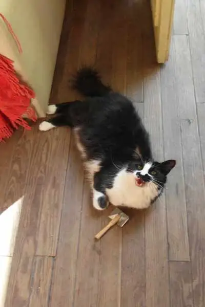
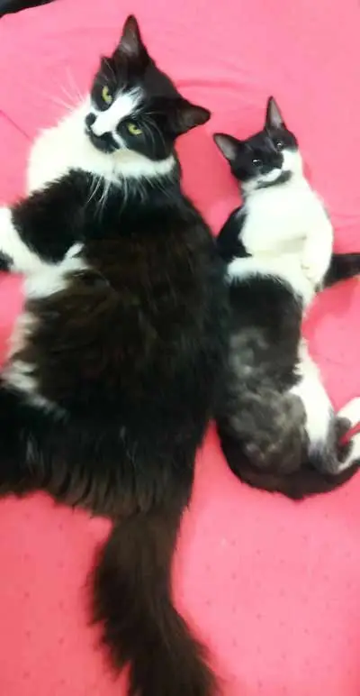
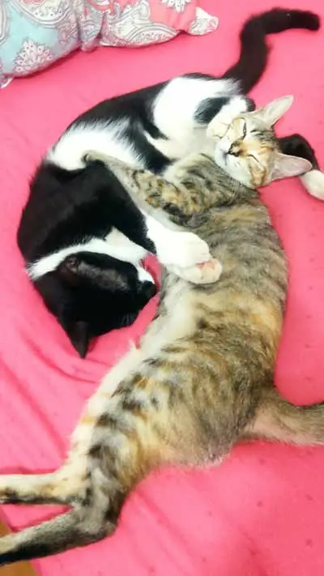
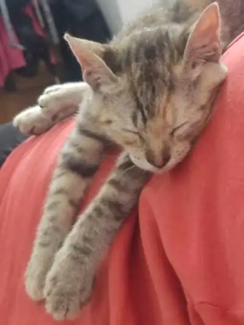
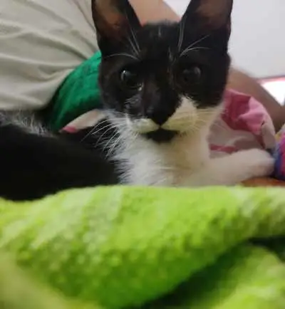
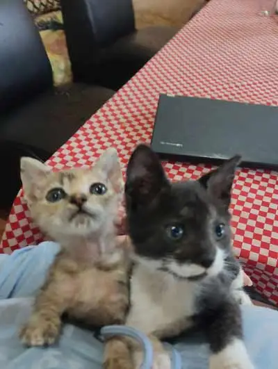
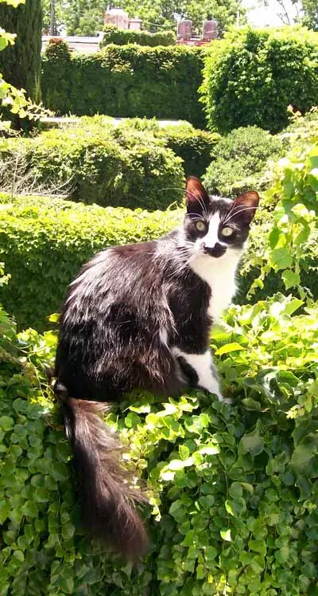

Lazy load demonstration with my beautiful cats

Totoro demanding we brush his hair

Totoro getting used to Bruno being close

Bruno and Nala sleeping

Nala sleeping on walter's back

Bruno ready to attack

Nala and Bruno as kittens

Totoro in the 'wild'